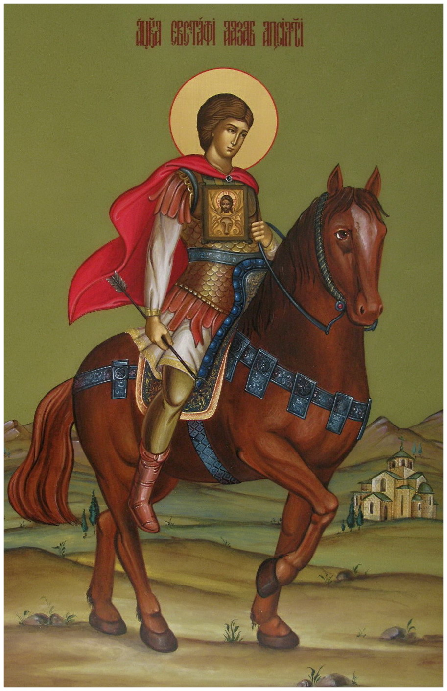
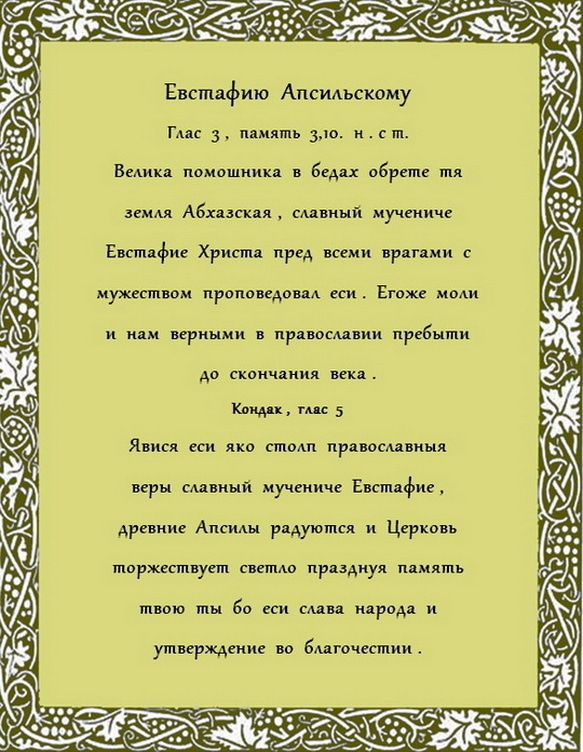
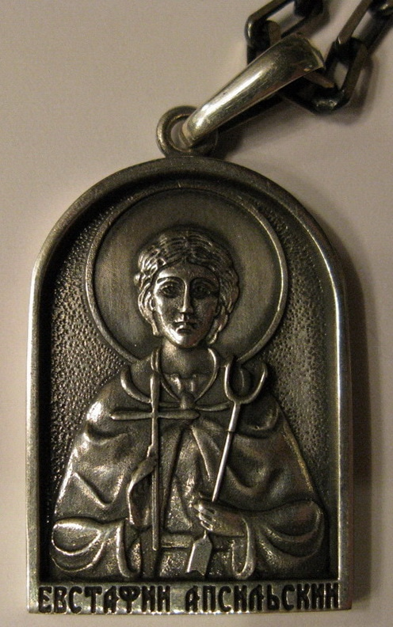
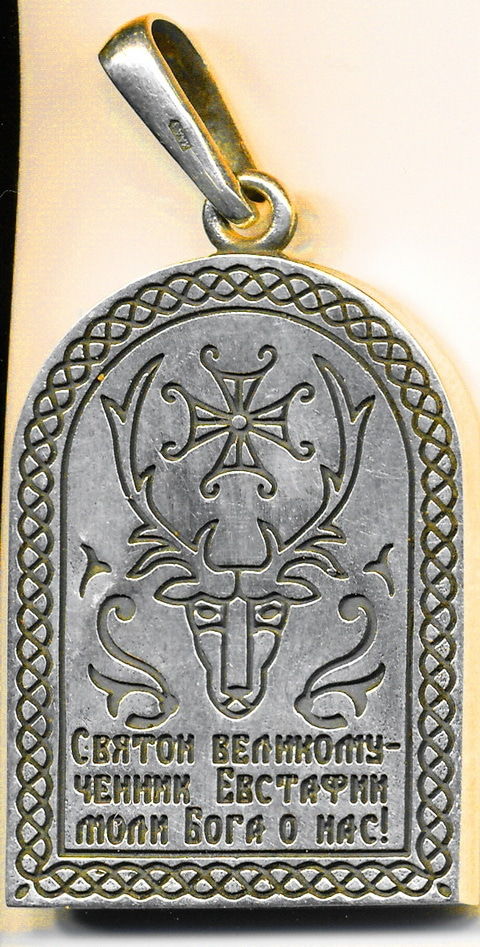
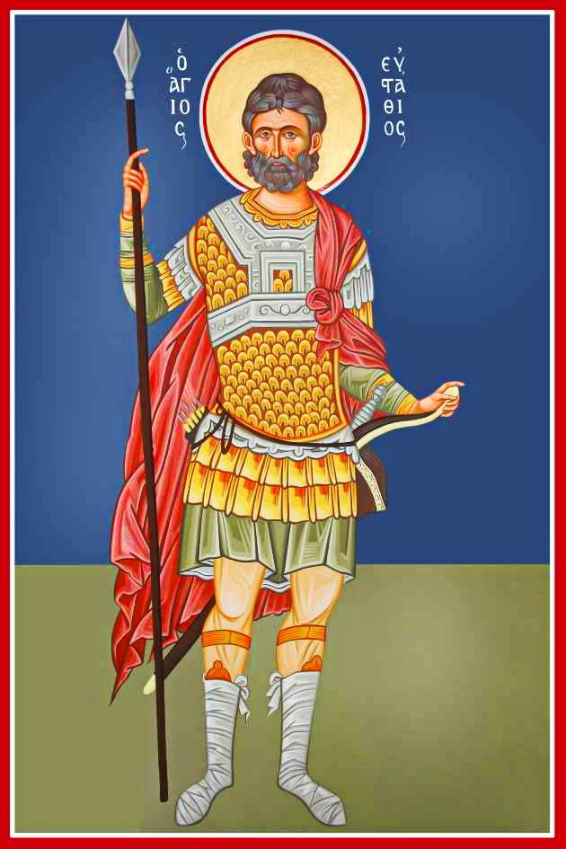
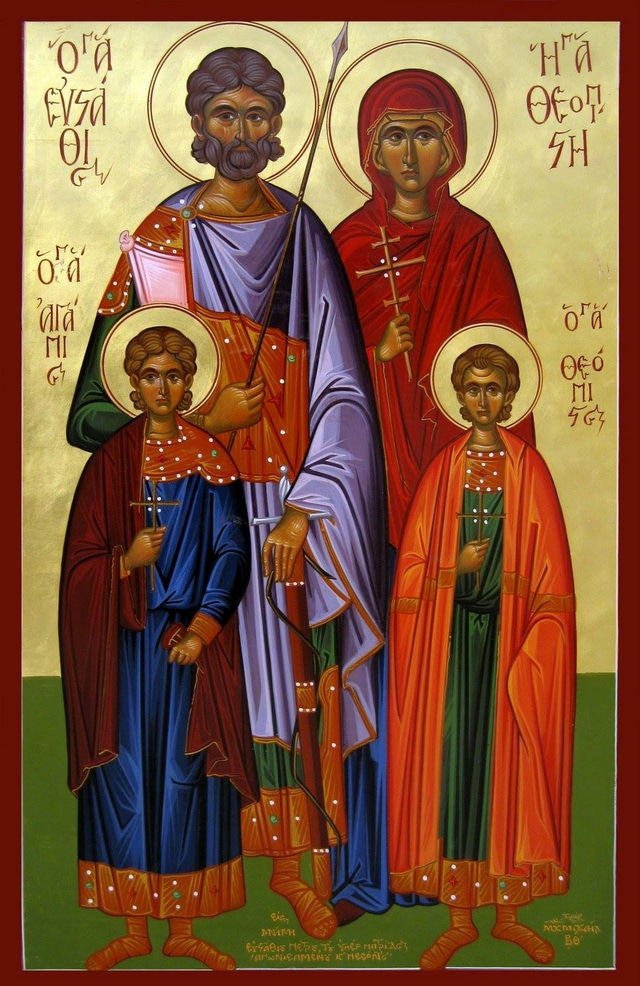

3 10 2013 (1318 дней 21 час назад)
С праздником Святого Евстафия, Абхазия!

В этот особенный для всей Абхазии духовный праздник, хочется вспомнить и помянуть всех сынов и дочерей нашей многострадальной страны которые положили жизнь свою за нашу святую землю, которая родила отважных героев нашего отечества, не склонив колени перед врагом, который всегда и во все времена люто покушался на нашу землю. В сердцах народа Апсны покуда мы живы, всегда останется память о них, и как о самом незабываемом Святом Евстафии, который не щадя жизни совершил подвиг во имя Христа за нас и за наше будущее, показав нам вечный пример своей стойкости, как защитника Веры и Отечества. Не преклонив колена перед врагом, он мужественно провел все тяжкие испытания выпавшие ему за последние два года в плену, и принял смерть, как подобает Великомученику.
Достойным причислился к святым, как и его духовный покровитель святой Великомученик Евстафий Плакида.
Вся Абхазия от края до края сегодня гордится своим небесным покровителем, который сегодня вместе с нашими сынами радуется за нас и молит Бога о нашем благополучии. В этот день не забудем братья и сестры придти в Храм поставить свечку за нашего великого соотечественника и молясь сказать : Евстафий! Мы тебя любим, мы тебя помним!
Автор сайта.
http://www.youtube.com/watch?v=VEQa3v8GNWY

Ко дню праздника, было выпущены несколько серебренных кулонов
с изображением святого Евстафия Апсильского. (автор: Дмитрий Гамисония)
с изображением святого Евстафия Апсильского. (автор: Дмитрий Гамисония)
 
Посвящается Евстафию Апсильскому.
Наш абхазский народ – духом сильный.
Вспомним предков своих, восьмой век.
Тогда правил народом Апсилии
Сын Марина, святой человек.
Сын Евстафием назван Марином
В честь Плакиды Евстафия был.
Не сломался в лихую годину
И о вере в Христа не забыл!
Нет, не зря назван был в честь Плакиды
И в Цибилиуме окрещён:
Вырос богопослушным и сильным,
Как отец – стал страной править он.
Были праздники, свадьбы играли
И рожали помногу детей,
Но в Апсилию вторглись арабы
И сгубили немало людей.
Сулейман, сын Хишама (халифа)
Подымал своих извергов в бой,
Сколько горя апсилам и лиха
Принесли изуверы с собой!
Сидерон, крепость мощная, – пала.
Оказался силён вражий стан,
И пленили народу немало
Наших предков тогда, христиан.
Избивались все пленные люди
В городах, где был главным – Исам,
Этих зверств наш народ не забудет:
Христиан – загоняли в ислам!
Был пленён и Евстафий Апсильский,
И избит аравийским вождём,
Принуждался к исламу насильно,
Но остался в Христе убеждён!
Не сломили побои и раны,
Сохранил он души чистоту!
Был замучен, скончался в Харране –
И поднялся в небес высоту!
И сейчас, свой народ наблюдая,
Земляков он по жизни ведёт
Вразумляя, любя, исцеляя,
Заблудившимся – руку даёт!
Если будешь ты в храме Илорском,
Лик Евстафия там погляди,
Суть понять и почувствовать просто,
Плат с оленем – взгляни, на груди,
Меж ветвями рогов – тот, кто рядом,
Тот, кто нужен и мне, и тебе!
Своим чистым пронзительным взглядом
Нас всегда Он ведёт по судьбе!
Не забудем заветы, законы,
Что для жизни святые несут,
И на нас – хоть с небес, хоть с иконы –
Изливают свет Истины, суть!
Для души с нами вы, не для вида –
И Евстафий Апсильский, святой,
И, конечно, Евстафий Плакида,
С нами делитесь Истиной той,
От которой спокойно на сердце,
И ответ есть на каждый вопрос,
И не страшен набег изуверский, –
С нами Истина, братья! Христос!
В.А Саванин в соавторстве
с Г.Гамисония

вмч.Евстафий Плакида, жена его мц.Феопистия и чада их
мчч.Агапия и Феописта
мчч.Агапия и Феописта